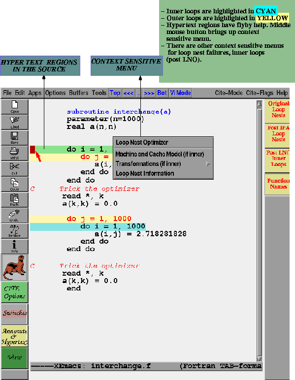
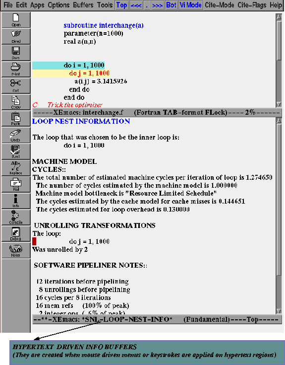

Say now we want more information on each of the loop nests. CITE provides a context sensitive menu which essentially makes the loop nests hypertextable and respond to mouse/keyboard events. The middle mouse button pops up the context sensitive menu as illustrated in the figure.

The various menu items would be explained elsewhere. Say we choose the item Loop Nest Information. The original buffer splits up into two and brings up the detailed loop level information from the loop nest optimizer and the code generator in the lower buffer (as the following figure illustrate).
